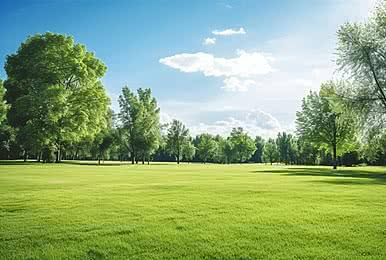
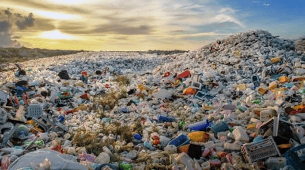
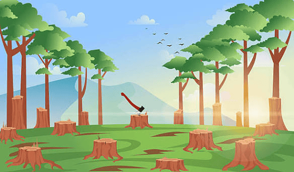
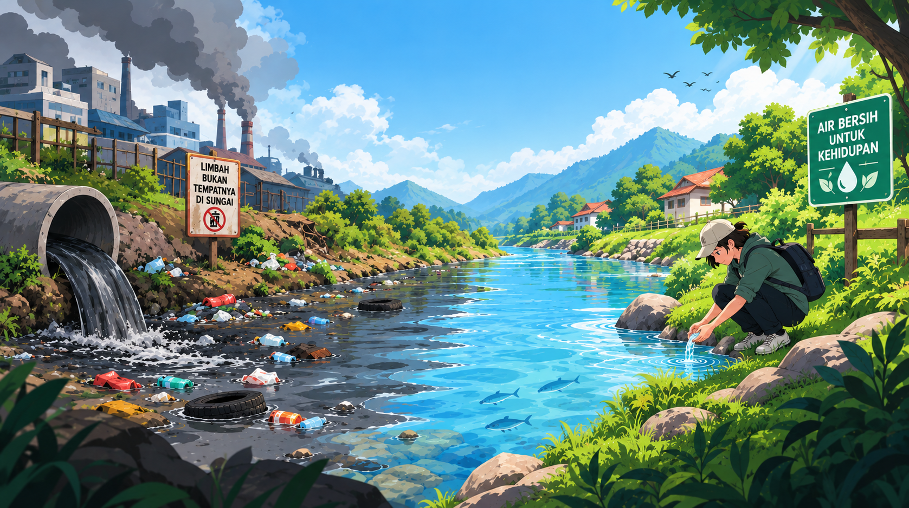
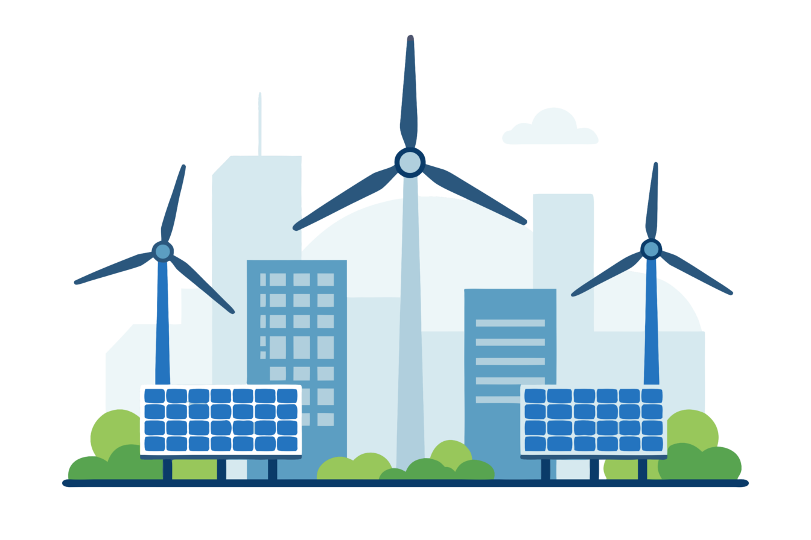

PEDULI LINGKUNGAN
Jaga Bumi, Mulai dari Kita.
Lingkungan yang sehat merupakan bagian penting dari kehidupan manusia. Melalui kebiasaan sederhana, kita dapat ikut menjaga alam dan menciptakan masa depan yang lebih baik.
Kenali Lingkungan
PEDULI LINGKUNGAN
Lingkungan yang sehat merupakan bagian penting dari kehidupan manusia. Melalui kebiasaan sederhana, kita dapat ikut menjaga alam dan menciptakan masa depan yang lebih baik.
Kenali LingkunganTENTANG LINGKUNGAN
Isu lingkungan merupakan berbagai masalah yang terjadi pada lingkungan alam dan dapat mengganggu keseimbangan ekosistem serta kehidupan manusia.
Isu atau masalah lingkungan mencakup kerusakan pada komponen alam seperti udara, air, tanah, dan keanekaragaman hayati yang melebihi kemampuan normal ekosistem untuk memulihkan dirinya.
Beberapa contoh isu lingkungan yang sering dibahas antara lain polusi, perubahan iklim, deforestasi, pencemaran air, dan krisis sampah.
MASALAH LINGKUNGAN
Kenali beberapa masalah lingkungan yang dapat memberikan dampak terhadap kehidupan manusia dan keseimbangan alam.

Sampah merupakan salah satu masalah lingkungan yang sering dijumpai dalam kehidupan sehari-hari. Sampah yang tidak dikelola dengan baik dapat mencemari lingkungan dan mengganggu kesehatan masyarakat.
Penumpukan sampah dapat mencemari tanah dan perairan. Sampah plastik yang masuk ke sungai dan laut juga dapat mengganggu ekosistem serta meningkatkan risiko banjir ketika menyumbat saluran air.
Kita dapat membantu mengurangi masalah sampah dengan mengurangi penggunaan plastik sekali pakai, membawa tas belanja dan botol minum sendiri, serta memilah sampah organik dan anorganik.

Deforestasi adalah berkurangnya kawasan hutan akibat penebangan, pembukaan lahan, perkebunan, pertambangan, atau perubahan fungsi kawasan hutan.
Hilangnya hutan dapat mengurangi habitat berbagai makhluk hidup dan menyebabkan berkurangnya keanekaragaman hayati. Kerusakan hutan juga dapat meningkatkan risiko erosi, banjir, dan bencana ekologis.
Upaya menjaga hutan dapat dilakukan dengan melindungi kawasan hutan, melakukan penghijauan, menanam pohon, serta menggunakan sumber daya alam secara bertanggung jawab.

Pencemaran air terjadi ketika zat atau limbah berbahaya masuk ke dalam sungai, danau, laut, atau sumber air lainnya. Kondisi ini dapat mengganggu kualitas air dan kehidupan organisme di dalamnya.
Air yang tercemar dapat mengganggu ekosistem perairan dan mengurangi ketersediaan air yang aman bagi kehidupan. Limbah rumah tangga, industri, dan sampah dapat menjadi sumber pencemaran apabila tidak dikelola dengan baik.
Kita dapat membantu menjaga air dengan tidak membuang sampah atau limbah ke sungai, menggunakan air secara bijak, serta menjaga kebersihan lingkungan di sekitar sumber air.

Penggunaan energi merupakan bagian penting dalam kehidupan sehari-hari. Namun, ketergantungan terhadap bahan bakar fosil dapat menghasilkan emisi yang berkontribusi terhadap perubahan iklim.
Penggunaan bahan bakar fosil menghasilkan emisi gas rumah kaca yang dapat memperburuk pemanasan global. Penggunaan energi yang tidak efisien juga menyebabkan pemborosan sumber daya.
Kita dapat menghemat energi dengan mematikan lampu dan perangkat elektronik ketika tidak digunakan. Selain itu, penggunaan energi terbarukan dapat menjadi bagian dari upaya menuju sistem energi yang lebih berkelanjutan.
LANGKAH SEDERHANA
Menjaga lingkungan tidak selalu membutuhkan tindakan besar. Kebiasaan sederhana yang dilakukan secara konsisten juga dapat memberikan dampak positif.
Kurangi penggunaan plastik sekali pakai, gunakan kembali barang yang masih layak, dan pisahkan sampah organik serta anorganik.
Menanam pohon atau tanaman di sekitar rumah dapat membantu menciptakan lingkungan yang lebih hijau.
Gunakan air secukupnya, matikan keran ketika tidak digunakan, dan segera perbaiki kebocoran.
Matikan lampu dan perangkat elektronik ketika tidak digunakan untuk mengurangi penggunaan energi.
HUBUNGI KAMI
Jika ingin menyampaikan pertanyaan atau informasi, silakan hubungi melalui kontak berikut.